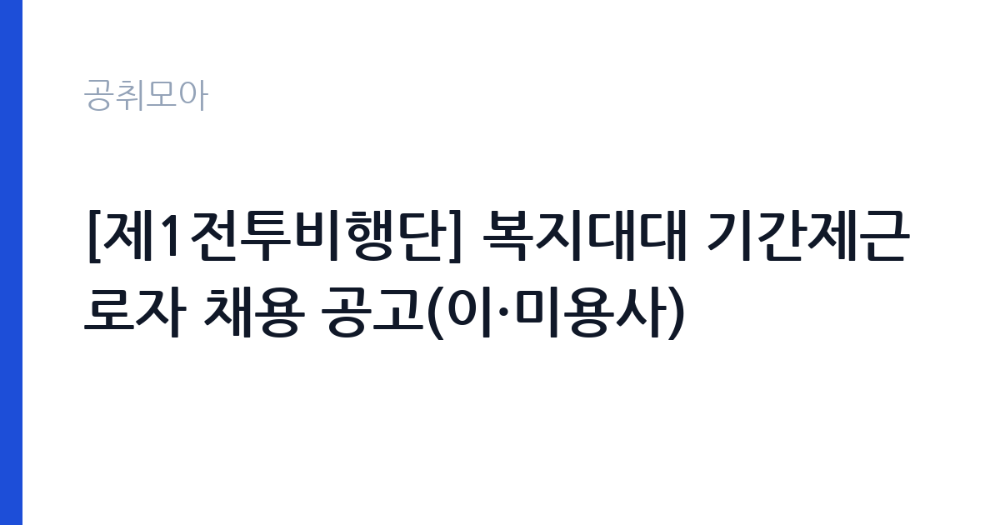

[국가기관] [제1전투비행단] 복지대대 기간제근로자 채용 공고(이·미용사)
국방부 국군조직 공군 공군제1전투비행단 · 전남 · 마감 2026-11-04 (D-14) · 출처 나라일터

한눈에 보는 모집 조건
| 기관 | 국방부 국군조직 공군 공군제1전투비행단 |
|---|---|
| 공고명 | [제1전투비행단] 복지대대 기간제근로자 채용 공고(이·미용사) |
| 고용형태 | 기간제 |
| 근무지 | 전남 |
| 게시일 | 2026-10-21 |
| 마감일 | 2026-11-04 (D-14) |
지원자격, 이렇게 읽으세요
- 이·미용사 1명
- 접수 ~2026-11-04 마감
- 세부 조건은 원문 공고문 확인
기간제 근로자는 근로계약 기간이 정해진 신분입니다. 계약 기간과 갱신 가능 여부가 근로계약서에 명시되며 기간 만료 시 근로관계가 종료됩니다. 결원 보충이나 특정 사업 기간에 맞춰 채용되는 경우가 많아 업무 범위가 명확합니다. 이번 공고는 국방부 국군조직 공군 공군제1전투비행단에서 직접 진행하는 자체 전형으로, 응시자격과 제출서류는 공고문에 항목별로 제시됩니다. 이용사나 미용사 자격증을 요구하는 경우가 대부분입니다. 관련 경력과 시술 범위를 확인하며, 군부대 근무라면 보안 규정 준수와 신원조회 절차가 추가됩니다. 근무지가 외곽에 있는 경우가 많아 출퇴근 수단을 미리 확인해야 합니다. 단기 계약이면 근무 기간이 명확히 정해집니다. 서류는 접수 마감 이후 보완이 되지 않으므로 자격 요건과 증빙 서류를 마감 전에 모두 갖춰야 합니다. 공고문에 명시된 우대 사항은 해당 여부를 확인해 증빙을 첨부해야 가점이 반영됩니다. 자격증은 유효 기간과 등록 상태를 확인해야 합니다. 갱신이 필요한 자격이라면 갱신 여부를 먼저 점검하십시오.
이 공고의 포인트
이 공고의 첫 번째 포인트는 고용 형태입니다. 계약 기간이 정해져 있어 근무 종료 시점이 명확합니다. 그만큼 짧은 기간에 어떤 실적을 남길지가 중요해집니다. 두 번째는 업무 범위가 명확하다는 점입니다. 이·미용 직무로 채용되므로 배치 이후 담당 업무가 크게 흔들리지 않습니다. 세 번째는 근무지입니다. 전남 지역 근무로 수도권 공고에 비해 지원자 분포가 넓지 않아 상대적으로 경쟁이 분산되는 경우가 있습니다. 선발 절차가 단순한 편이어서 서류와 면접 준비에 집중할 수 있습니다. 다만 선발 인원이 1명으로 많지 않아 자격을 갖춘 지원자가 몰리면 경쟁률이 높아질 수 있습니다.
전형은 어떻게 진행되나
1차 서류, 2차 면접의 2단계로 진행되는 구성이 일반적입니다. 서류에서는 자격 요건과 경력 증빙을 확인하고, 면접에서는 실제 업무 수행 능력과 조직 적응을 봅니다. 직무에 따라 필기시험이나 실기, 컴퓨터 활용 시험이 추가되기도 하므로 공고문의 전형표를 먼저 확인하십시오. 단계별로 합격자만 다음 전형에 응시할 수 있고, 단계마다 응시 자격 확인 서류를 다시 제출해야 하는 경우가 있습니다. 최종합격자 발표 후에는 신원조회와 채용 신체검사가 남아 있습니다. 동점자 처리 기준이 공고문에 명시되어 있으니 배점 항목을 미리 확인해 두십시오.
이런 분께 추천해요
- 이용사·미용사 자격을 보유한 분
- 시설 근무 특성상 단독 운영이 가능한 분
- 위생 관리와 도구 소독을 철저히 하는 분
지원 전 체크리스트
- 응시자격 요건과 경력 기준을 충족하는가 — 경력은 증명서로 입증해야 합니다
- 계약 기간과 근무 시작일·종료일을 확인했는가
- 제출서류 목록을 모두 준비했는가 — 누락 시 서류 단계에서 탈락합니다
- 접수 마감 2026-11-04 이전에 접수 방식을 확인해 제출했는가
모집 일정과 제출 타이밍
2026-10-21에 공고가 올라왔고 접수는 2026-11-04까지입니다. 남은 기간은 14일이며, 이 기간에 자격증 사본과 경력증명서, 주민등록등본 같은 기본 서류를 모두 준비해야 합니다. 경력증명서는 발급에 며칠이 걸리는 경우가 있으니 가장 먼저 신청하십시오. 접수는 온라인과 우편·방문으로 나뉘는 경우가 많고, 우편 접수는 도착 기준으로 판정되므로 마감일 소인만 믿으면 안 됩니다. 면접 일정은 서류 발표 후 개별 통보되므로 제출 후에도 연락을 받을 수 있도록 유지해야 합니다. 접수 첫날에 몰리면 시스템 접속이 지연될 수 있으므로 오전 시간대 제출이 안전합니다. 전남 근무지는 도서·산간 지역이 포함될 수 있어 근무지 세부 주소를 반드시 확인하십시오. 마감까지 2주 안팎이 있어 준비할 시간은 있지만 미루면 촉박해집니다. 선발 인원이 한두 명 수준이라 지원자 개개인의 서류 완성도가 그대로 평가에 반영됩니다.
직무 이해하기: 국가기관
지방자치단체는 지역 행정과 복지, 시설 운영을 담당합니다. 부서별로 사업을 수행하고 결원이나 신규 사업에 따라 임기제와 기간제 인력을 채용합니다. 조례와 자체 인사 규정에 따라 채용 절차가 진행됩니다. 이·미용 업무는 시설 구성원을 대상으로 이발과 미용 서비스를 제공하는 일입니다. 이용자의 요청을 확인해 시술하고, 사용한 도구를 소독해 정리합니다. 군부대나 복지시설처럼 대상이 정해진 곳에서는 이용 인원과 시간이 정해져 있어 순서를 관리해야 합니다. 위생 관리와 도구 소독이 매일 반복되는 핵심 업무입니다. 근무지에 따라 이동 서비스나 정기 방문 형태로 운영되기도 합니다. 업무는 혼자 처리하기보다 부서 단위로 나눠 진행되므로 담당 구역과 협업 범위를 입사 초에 확인하는 것이 중요합니다. 업무 매뉴얼과 지침이 문서로 정리되어 있어 절차를 익히면 반복 업무는 빠르게 손에 붙습니다.
자기소개서 작성 팁
이·미용 지원서는 시술 경력과 위생 관리를 중심으로 쓰십시오. 다룬 시술 종류와 이용자 수, 운영 방식(단독 운영 여부)을 구체적으로 제시하면 신뢰가 생깁니다. 시설 근무 경험이 있다면 정해진 인원과 시간을 관리한 사례로 연결하십시오. 위생 관리에 대한 습관을 한 문단 넣는 것이 좋습니다. 직무 경험이 많지 않다면 경험의 양보다 과정을 구체적으로 쓰는 편이 낫습니다. 어떤 상황에서 무엇을 판단했고 어떤 결과가 나왔는지 순서대로 서술하면 신뢰가 생깁니다. 지원 동기와 기여 방안은 한 문단씩 짧게 유지하고, 가장 자신 있는 경험에 분량을 몰아주십시오. 마지막 문장은 포부보다 구체적인 실행 계획으로 끝내는 것이 좋습니다.
면접 준비 포인트
면접에서는 시술 경험과 위생 관리를 확인합니다. 도구 소독 주기와 방법, 이용자 요청이 무리할 때 어떻게 설명하는지 묻습니다. 이용자 만족도를 높인 사례를 구체적으로 답하면 좋습니다. 근무지 특성상 협소한 공간에서 혼자 운영하는 경우가 있으므로 자기 관리 능력도 평가 대상입니다. 답변은 상황, 판단, 조치의 순서로 정리하면 전달이 분명해집니다. 모르는 질문에는 모른다고 밝히고 확인 방법을 제시하는 편이 억지 답변보다 낫습니다. 마지막에는 근무 의사와 함께 2026-11-04 이후 일정에 언제든 응할 수 있다는 점을 전달하십시오. 답변 시간이 짧게 정해져 있는 경우가 있으므로 핵심 문장을 먼저 말하고 근거를 붙이는 방식이 유리합니다.
급여·근무조건 읽는 법
이·미용 직무의 보수는 기관 임금표나 개별 근로계약으로 정해지며, 월급 또는 일급 형태로 지급됩니다. 단기 계약이면 근무 기간과 총 급여를 함께 확인해야 합니다. 2026년 최저임금은 시급 10,320원, 월 환산 2,156,880원입니다. 식사와 숙소 제공 여부가 총 보상에 영향을 주므로 공고문의 처우 항목을 확인하십시오. 구체적인 금액은 원문에서 확인할 수 있습니다. 2026년 적용 최저임금은 시급 10,320원, 월 환산 2,156,880원(주 40시간·209시간 기준)입니다. 고용노동부 고시 제2025-47호로 확정된 금액입니다. 공고문에 금액이 제시되지 않은 항목은 원문 보수표나 처우 설명에서 확인해야 하며 확인되지 않은 수치는 쓰지 않는 것이 원칙입니다. 비교할 때는 월 급여뿐 아니라 상여·명절휴가비·복지포인트·초과근무수당까지 포함한 연간 총액으로 계산하십시오. 기간제라면 계약 기간 동안의 총액을, 무기계약이라면 호봉 상승과 정년까지의 누적 소득을 기준으로 판단하는 편이 정확합니다.
자주 묻는 질문
- 선발 인원은 몇 명인가요?
공고문 기준 1명입니다. 직종별로 인원이 나뉘는 경우가 있으니 모집분야 항목을 함께 확인하십시오. - 근무지는 어디인가요?
전남 지역의 국방부 국군조직 공군 공군제1전투비행단 소속 근무지입니다. 세부 주소와 출퇴근 조건은 원문 공고문에서 확인할 수 있습니다. - 보수는 얼마인가요?
채용 신분(기간제)과 기관 임금 규정에 따라 정해지며 구체적인 금액은 공고문 처우 항목에 제시됩니다. 금액이 공개되지 않은 경우에는 원문의 보수표를 확인하십시오.
함께 보면 좋은 공고
[국가기관] 2026년 남부지방산림청 제3차 공무직근로자(산불재난특수진화대원) 채용 공고 — 마감 2026-10-29[국가기관] 대전지방공소청 2026년 제1회 공무직근로자(사무원) 채용시험 시행계획 공고 — 마감 2026-10-30[국가기관] 2026년도 제1회 용인우체국 공무직 우체국소포원 채용 공고 — 마감 2026-10-30출처: 나라일터 공개정보를 바탕으로 공취모아가 정리한 안내글입니다. 모집 조건·일정은 변경될 수 있으니 지원 전 반드시 원문 공고문을 확인하세요. 본 글은 정보 제공용이며 합격을 보장하지 않습니다.